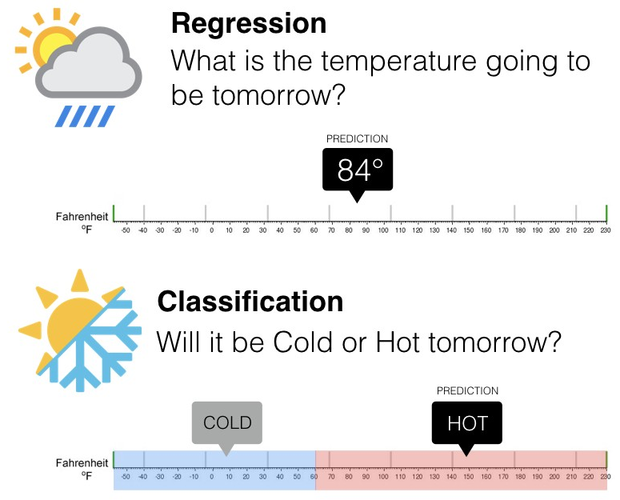

Capítulo 2 Repaso
En los cursos anteriores, hemos hablando a cerca del proceso completo de Ciencia de Datos, para poder empezar con la segunda parte del curso de Analisis Supervisado, valele la pena hacer un breve repaso de lo que hemos estudiado hasta el momento.
2.1 Machine Learning
Machine Learning o –aprendizaje automático– es una rama de la inteligencia artificial que permite que las máquinas aprendan de los patrones existentes en los datos. Se usan métodos computacionales para aprender de datos con el fin de producir reglas para mejorar el desempeño en alguna tarea o toma de decisión. (Está enfocado en la programación de máquinas para aprender de los patrones existentes en datos principalmente estructurados y anticiparse al futuro)


2.2 Tipos de aprendizaje
Platicamos en el módulo pasado que al hablar de Machine Learning, existen distintos tipos de aprendizaje, siendo los más comúnes:
- Aprendizaje supervisado
- Aprendizaje no supervisado
Otreos ejemplos de especialidades son
- Aprendizaje profundo
- Aprendizaje por refuerzo
La diferencia entre el análisis supervisado y el no supervisado es la etiqueta, es decir, en el análisis supervisado tenemos una etiqueta “correcta” y el objetivo de los algoritmos es predecir esta etiqueta.
2.2.1 Aprendizaje supervisado
Conocemos la respuesta correcta de antemano.
Esta respuesta correcta fue “etiquetada” por un humano (la mayoría de las veces, en algunas circunstancias puede ser generada por otro algoritmo).
Debido a que conocemos la respuesta correcta, existen muchas métricas de desempeño del modelo para verificar que nuestro algoritmo está haciendo las cosas “bien”.
2.2.1.1 Tipos de aprendizaje supervisado (Regresión vs clasificación)
Existen dos tipos principales de aprendizaje supervisado, esto depende del tipo de la variable respuesta:
Los algoritmos de clasificación se usan cuando el resultado deseado es una etiqueta discreta, es decir, clasifican un elemento dentro de diversas clases.
En un problema de regresión, la variable target o variable a predecir es un valor numérico.

2.2.2 Aprendizaje no supervisado
Aquí no tenemos la respuesta correcta de antemano ¿cómo podemos saber que el algoritmo está bien o mal?
Estadísticamente podemos verificar que el algoritmo está bien
Siempre tenemos que verificar con el cliente si los resultados que estamos obteniendo tienen sentido de negocio. Por ejemplo, número de grupos y características

2.3 El proceso de Machine Learning
La cuestión no es solo saber para qué sirve el Machine Learning, sino que saber cómo funciona y cómo poder implementarlo en la industria para aprovecharse de sus beneficios. Hay ciertos pasos que usualmente se siguen para crear un modelo de Machine Learning. Estos son típicamente realizados por científicos de los datos que trabajan en estrecha colaboración con los profesionales de los negocios para los que se está desarrollando el modelo.
- Seleccionar y preparar un conjunto de datos de entrenamiento: Los datos de entrenamiento son un conjunto de datos representativos de los datos que el modelo de Machine Learning ingerirá para resolver el problema que está diseñado para resolver. Los datos de entrenamiento deben prepararse adecuadamente: aleatorizados y comprobados en busca de desequilibrios o sesgos que puedan afectar al entrenamiento. También deben dividirse en dos subconjuntos: el subconjunto de entrenamiento, que se utilizará para entrenar el algoritmo, y el subconjunto de validación, que se utilizará para probarlo y perfeccionarlo.

Elegir un algoritmo para ejecutarlo en el conjunto de datos de entrenamiento: Este es uno de los pasos más importantes, ya que se debe elegir qué algoritmo utilizar, siendo este un conjunto de pasos de procesamiento estadístico. El tipo de algoritmo depende del tipo (supervisado o no supervisado), la cantidad de datos del conjunto de datos de entrenamiento y del tipo de problema que se debe resolver.
Entrenamiento del algoritmo para crear el modelo: El entrenamiento del algoritmo es un proceso iterativo: implica ejecutar las variables a través del algoritmo, comparar el resultado con los resultados que debería haber producido, ajustar los pesos y los sesgos dentro del algoritmo que podrían dar un resultado más exacto, y ejecutar las variables de nuevo hasta que el algoritmo devuelva el resultado correcto la mayoría de las veces. El algoritmo resultante, entrenado y preciso, es el modelo de Machine Learning.
Usar y mejorar el modelo: El paso final es utilizar el modelo con nuevos datos y, en el mejor de los casos, para que mejore en precisión y eficacia con el tiempo. De dónde procedan los nuevos datos dependerá del problema que se resuelva. Por ejemplo, un modelo de Machine Learning diseñado para identificar el spam ingerirá mensajes de correo electrónico, mientras que un modelo de Machine Learning que maneja una aspiradora robot ingerirá datos que resulten de la interacción en el mundo real con muebles movidos o nuevos objetos en la habitación.
2.4 Errores: Sesgo vs varianza
En el mundo de Machine Learning cuando desarrollamos un modelo nos esforzamos para hacer que sea lo más preciso, ajustando los parámetros, pero la realidad es que no se puede construir un modelo 100% preciso ya que nunca pueden estar libres de errores.
Comprender cómo las diferentes fuentes de error generan sesgo y varianza nos ayudará a mejorar el proceso de ajuste de datos, lo que resulta en modelos más precisos, adicionalmente también evitará el error de sobreajuste y falta de ajuste.
- Error por sesgo:
Es la diferencia entre la predicción esperada de nuestro modelo y los valores verdaderos. Aunque al final nuestro objetivo es siempre construir modelos que puedan predecir datos muy cercanos a los valores verdaderos, no siempre es tan fácil porque algunos algoritmos son simplemente demasiado rígidos para aprender señales complejas del conjunto de datos.
Imagina ajustar una regresión lineal a un conjunto de datos que tiene un patrón no lineal, no importa cuántas observaciones más recopiles, una regresión lineal no podrá modelar las curvas en esos datos. Esto se conoce como underfitting.
- Error por varianza:
Se refiere a la cantidad que la estimación de la función objetivo cambiará si se utiliza diferentes datos de entrenamiento. La función objetivo se estima a partir de los datos de entrenamiento mediante un algoritmo de Machine Learning, por lo que deberíamos esperar que el algoritmo tenga alguna variación. Idealmente no debería cambiar demasiado de un conjunto de datos de entrenamiento a otro.

Los algoritmos de Machine Learning que tienen una gran varianza están fuertemente influenciados por los detalles de los datos de entrenamiento, esto significa que los detalles de la capacitación influyen en el número y los tipos de parámetros utilizados para caracterizar la función de mapeo.
- Error irreducible: El error irreducible no se puede reducir, independientemente de qué algoritmo se usa. También se le conoce como ruido y, por lo general, proviene por factores como variables desconocidas que influyen en el mapeo de las variables de entrada a la variable de salida, un conjunto de características incompleto o un problema mal enmarcado. Acá es importante comprender que no importa cuán bueno hagamos nuestro modelo, nuestros datos tendrán cierta cantidad de ruido o un error irreductible que no se puede eliminar.
2.5 Ingeniería de características (Feature Engineering)
En este curso analizaremos distintos métodos de machine learning que permitirán predecir una respuesta numérica o categórica. Usaremos el lenguaje de programación R.